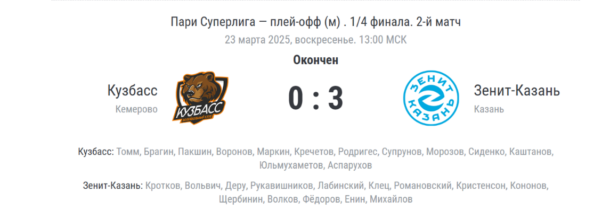

Казанский «Зенит» уверенно вышел в полуфинал чемпионата России

В первом матче «Зенит-Казань» обыграл «Кузбасс» со счётом 3:0 (25:22, 25:12, 25:10). Счёт в серии 2-0 в пользу «Зенита». Таким образом, команда из Казани вышла в полуфинал соревнований.
Победителем предварительного (группового) этапа в сезоне-2024/2025 стал «Зенит-Казань», набравший 79 очков за 28 игр.
Напомним, в мужском чемпионате России по волейболу сезона-2024/2025 принимают участие 15 команд. Первая четвёрка напрямую прошла в четвертьфинал турнира. Лучшими в регулярном чемпионате, помимо казанского «Зенита», стали «Динамо» (Москва), «Белогорье» (Белгород) и «Локомотив» (Новосибирск).